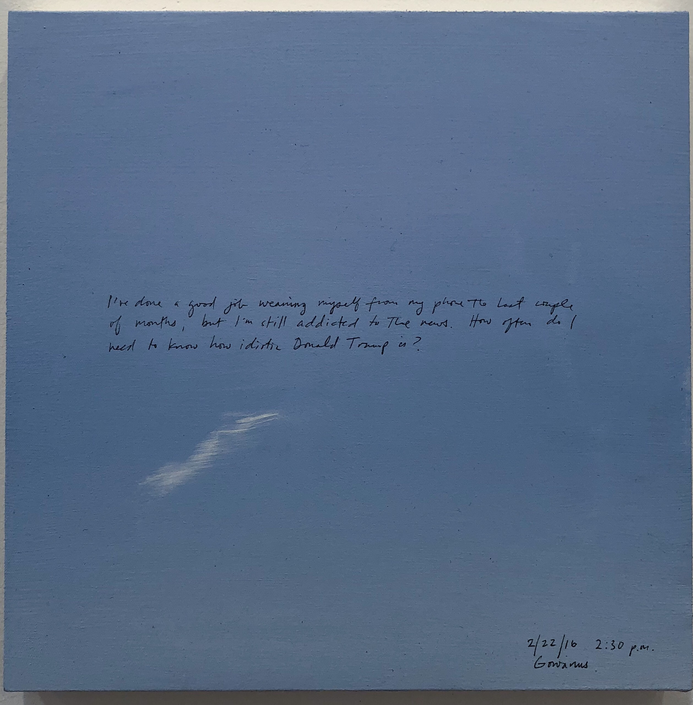

----------------------------------------------------------------- Byron Kim's Sunday Paintings at James Cohan
Article and photos by Laura Grasso 1-16-18
In Byron Kim’s current exhibition at James Cohan, Sunday Paintings, 1/7/01 to 2/11/18, the gallery presents a selection of 14x14 square patches of sky, culled from a larger overarching project of Kim’s to paint a painting every week. All but the earliest canvases in the project contain anywhere from a sentence to a paragraph written in pen directly on top of the paint, with a time, date, and location in the lower corner. In these individual swaths of that day’s sky, Kim doles out tidbits of his life, quick diary entries that vary from the seemingly mundane – “It rained really hard last night and this morning. Ella just left for soccer camp. Addee is in a funk despite the two new kittens in the room. They are gray tabbies named Luna and Jane.” – to the introspective – “I got really mad at Addee last night not because she did anything wrong but because I was frustrated and tense and lonely… .”
Presented in selected succession, the paintings easily invite the viewer to step inside of Kim’s life and to follow a fragmented plotline of the banalities of growing up and growing older. Kim’s style of documentation and the edited nature of the exhibition means the viewer may get two entries from one month and none from the next – cruising handily through the years of soccer games and vacations and musings on art and politics – but the intimacy of the writing means that the viewer can immediately recognize and identify with the truth of the quotidian details. The sky Kim presents each day is a sky that any of us could have seen, and the moments he chooses to document aren’t all moments that could have happened to any of us, but the way Kim writes about them allows the viewer to feel as if they are universal.
Unabashed truthfulness is a form of vulnerability that can be difficult to contend with, but Kim’s vulnerability allows the viewer to have a sense of access that is usually denied in relation to public figures. Sunday Paintings eschews the idea of a mythologized artist, disavowing the pedestal we so often put talented/creative/exceptional humans on to instead demonstrate exceeding normalcy. Kim exhibits his reality and in turn invites the viewer to consider their own realities, not as an object to be presented to others, but merely as an introspective tool. Kim’s paintings were not necessarily meant for a public audience, and that’s why they become so instantly engaging. They have no artifice or presumptions in their documentary nature, evoking at their root the commonality of the human experience in its most basic form.
By taking away the need for interpretation, Kim also removes a formalistic barrier between art and viewer, where one has nothing to “get” to fully appreciate the work. Sunday Paintings’ openness is the antithesis to difficult painting and complicated conceptualism that can often alienate viewers who do not (or cannot) take the steps required by the artist to achieve the optimal interaction with the work. That doesn’t mean Sunday Paintings require no interaction, but these paintings invite said interaction rather than demand it. For Kim, the work is complete with or without the viewer’s input or interpretation because the initial function of the work is so inherently journalistic, but for the viewer, interaction with the work determines the robustness of the experience. Kim’s Sunday Paintings succeed so winningly because they offer frank glimpses of reality that viewers cannot help but fold themselves into, transforming a traditional art viewing experience into one of stark familiarity not typically seen in the standard exhibition.
" 
----------------------------------------------------------------- Home